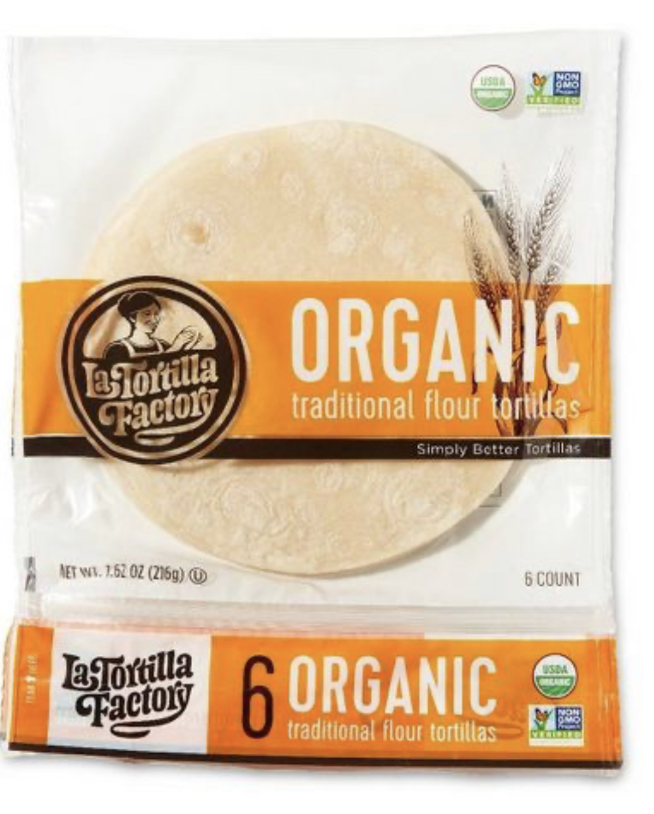

A scrumptious mix of veggies with black beans with homemade enchilada sauce! A Mouthwatering taste with new flavor.
Prep time: 25 mins
Cook Time: 30 mins
Total Time: 55 mins
Servings: 6
Yield: 6 Enchiladas
Ingredients
cooking spray
2 tablespoons olive oil
1 onion, chopped
1 small red bell pepper, chopped
1(15 OZ)can vegetarian black beans
1 cup corn kernels, thawed
1package cream cheese, softened(8 ounce)
1 teaspoon ground cumin
Salt and ground black pepper to taste
1 cup chopped fresh cilantro
1 can green chiles(4 ounce),undrained or Fresh Green chillies(acc to spice level)
1/2 cup tomato salsa
1/2 cup tomato sauce
1/2 lime, juiced
2 cloves garlic, peeled
2 teaspoons dried oregano
6 flour tortillas
2 cups shredded Cheddar cheese
1 cup chopped avocado
1 cup chopped tomatoes
1/2 cup sour cream, or to taste

How To Prepare:
1. Preheat oven to 375 degrees F (190 degrees C).
2. Spray cooking oil spray on a Baking Pan.
3. Heat olive oil in a large skillet over medium heat.
4. Add onion and bell pepper in hot oil until tender, and cook for about 5 minutes.
5. Reduce heat to medium-low and add black beans, corn, and cream cheese and then stir well.
6. Then Season with cumin, salt, paprika powder and pepper.
7. Simmer until bean mixture is hot, for about 5 minutes and remove from heat.
How To Prepare Cilantro Salsa:
1. Add the cilantro, green chillies, salsa, tomato sauce, lime juice, garlic, and oregano in a food processor.
2. Blend until smooth, around 10 pulses.
More steps To Prepare:
1. Spread bean mixture evenly down the center of each tortilla.
2. Add a handful of Cheddar cheese to each tortilla.
3. Then roll the tortillas with the cheese and bean filling.
4. Place the enchiladas in the prepared baking Pan, and place the seam sides down.
5. Pour the remaining cilantro salsa mixture over the enchiladas and sprinkle the remaining Cheddar cheese on top of the enchiladas.
6. Bake in the preheated oven for about 20 to 30 minutes, until the cheese is melted and sauce is bubbly.
7. Garnish with avocado, tomatoes, and sour cream.
8. Enjoy your Delicious Vegetarian Black Bean Enchilada.